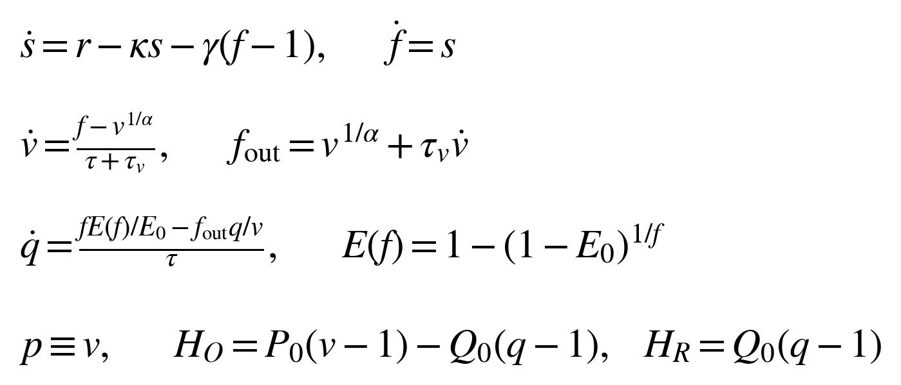
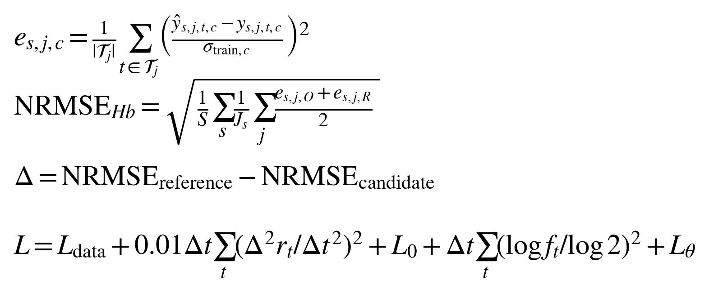
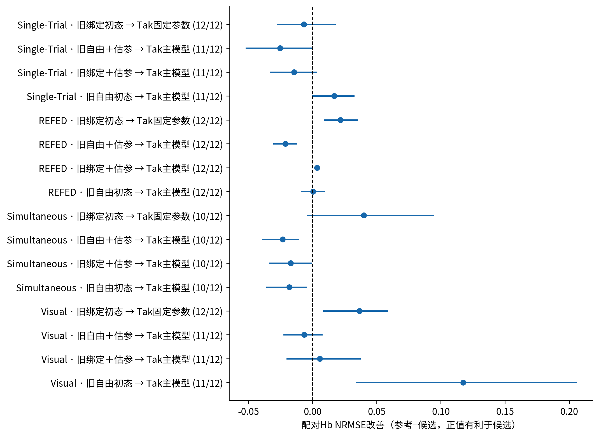
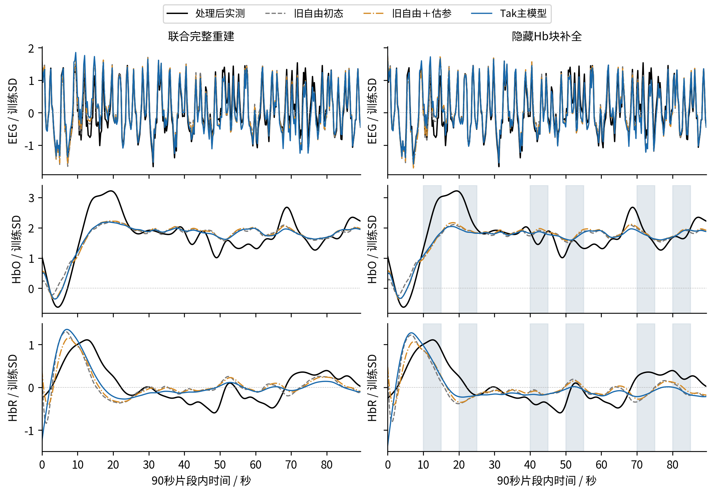
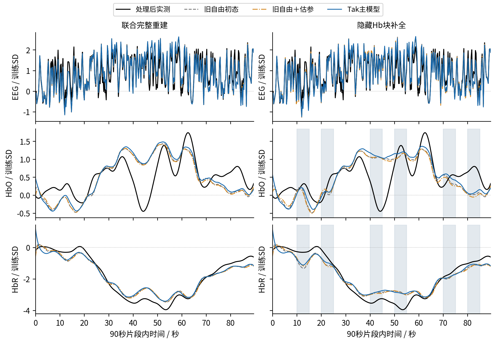
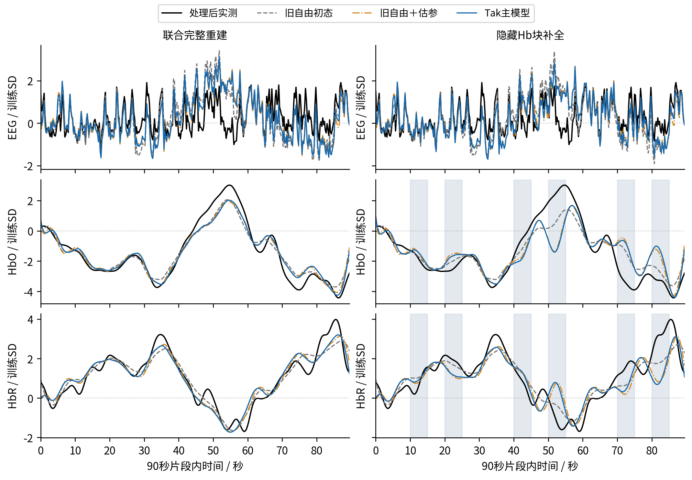
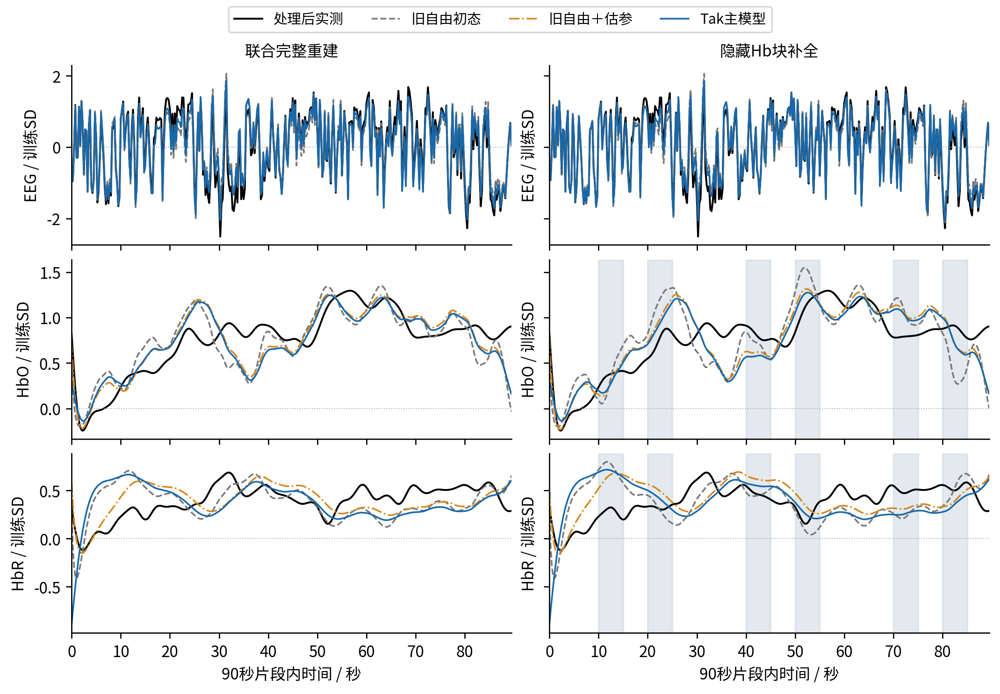

2026-10-27 · SSM-TAK-v1 · 四个公开数据集、24名被试、48个连续片段。采用统一带通Hb缓存，全部臂重新拟合；本报告汇总同口径的条件重建、隐藏块补全与参数敏感性。
| 90秒联合完整 | 合格数：旧→Tak | Hb NRMSE：旧→Tak | 旧自由＋估参 | 配对改善与95%探索区间 |
|---|---|---|---|---|
| Single-Trial | 12/12 → 11/12 | 0.430 → 0.414 | 0.388 | 0.0167 [-0.0001, 0.0321] |
| Simultaneous | 12/12 → 10/12 | 0.535 → 0.553 | 0.529 | -0.0183 [-0.0356, -0.0052] |
| Visual | 12/12 → 11/12 | 0.566 → 0.448 | 0.442 | 0.1173 [0.0342, 0.2054] |
| REFED | 12/12 → 12/12 | 0.237 → 0.237 | 0.216 | 0.0005 [-0.0086, 0.0089] |
旧→Tak指旧自由初态、固定参数与Tak主模型（四初态、估计κ和τ）。误差与改善均基于各自与Tak共同成功的身份；数值合格数保留原12片段分母。正改善表示Tak误差更低，详细配对分母在后文。
主模型在4/4库的90秒联合完整比较中，误差高于同样估参的旧自由初态模型。旧模型多一个独立p初态，因此还要看双方都使用四初态的比较。窄先验产生的稳定参数和精确p=v属于模型约束，不是生理真值恢复证据。
所有结果来自公开开发材料，未读取保护评价或新原始Hb。没有训练tokenizer、开展下游分类或恢复完整DCM的连接模型、光密度观测和变分推断。
| 阶段 | 计划结果 | 终态 | 数值合格 |
|---|---|---|---|
| synthetic | 72 | 72 | 72 |
| measured | 2304 | 2304 | 2253 |
| sensitivity | 288 | 288 | 276 |
实测参数分为39个原生记录／session支持／Hb通道组。每组一个参数向量；同组不重叠片段分别估初态。不同会话不绑定，间隔没有数据时不伪造状态传播。30秒是同一90秒片段的中段，不能充当独立被试。
保留父运行的EEG特征及身份。Hb只读v5/none统一缓存；全记录已执行0.01–0.2Hz带通，再取250毫秒分箱和窗口前5秒参考。模型端不重复带通。PCA、共同Hb正尺度及各观测SD均仅由原开发被试重新确定，评价被试不参与。
联合完整：EEG/HbO/HbR都可见；Hb-only完整：只用Hb拟合，EEG误差是外部评分；联合隐藏：EEG全程可见，Hb在每30秒的10–15秒、20–25秒隐藏。末端插值bin在所有拟合和评分中排除。
缓存预处理早于遮挡，因此隐藏实验检验离线处理特征补全，不能称实时或原始传感器未来预测。窗口ODE是带通坐标中的条件模型，未重建窗口外状态，也未严格重放完整记录的滤波过程。
Hb单位保留缓存约定：Simultaneous为µM，其他为各库相对／未核定单位。拟合保持两色团相对幅度；图中可除以固定训练SD，绝不逐窗或逐帧重新归一化。

r是当前EEG约束的自由神经驱动；s是流量诱导信号；f、v、q分别为相对静息血流、容量和脱氧Hb。p为相对总Hb，直接由v给出。τ和τᵥ单位为秒，κ为衰减率，γ为反馈系数；α=E₀=0.32固定。
Tak原式使p/v保持初始比例。本文选择p₀=v₀并消去独立p；未加入独立血管过程噪声。自由初态为s₀、log f₀、log v₀、log q₀，允许非静息，但全程检查正状态与P₀v≥Q₀q。参考后的ΔHb可以为负。
τᵥ=0且p=v时，两核心的轨迹与切线一致；因此旧绑定臂已是零黏弹性对照。脱氧Hb方程仍除以τ，不能把所有τ换成τ+τᵥ。前向、离散状态/参数导数与独立重放均同步更新。
P₀=1、Q₀=0.35保留当前观测坐标；未把论文浓度直接替换到未标定的项目坐标。以上血流核心忠于Tak/SPM，当前自由驱动与Hb目标仍是项目自身的推断设置。
| 模型 | 方程 | τᵥ参考/s | 初态 | 估计参数 | log先验SD |
|---|---|---|---|---|---|
| 旧自由初态 | 旧流入平衡 | 0 | 5自由初态 | 固定 | — |
| 旧绑定初态 | 旧流入平衡 | 0 | 4自由初态，p=v | 固定 | — |
| Tak固定参数 | Tak | 2 | 4自由初态，p=v | 固定 | — |
| Tak静息初态 | Tak | 2 | 固定血管静息 | 固定 | — |
| 旧自由＋估参 | 旧流入平衡 | 0 | 5自由初态 | κ/τ | 0.25/0.25 |
| 旧绑定＋估参 | 旧流入平衡 | 0 | 4自由初态，p=v | κ/τ | 0.25/0.25 |
| Tak主模型 | Tak | 2 | 4自由初态，p=v | κ/τ | 0.25/0.25 |
| Tak文献先验 | Tak | 2 | 固定血管静息 | κ/τ/γ/τᵥ | 0.04979/0.04979/0.04979/1 |
全部臂固定EEG读出、Hb基线尺度与神经血管增益。旧绑定与Tak四初态共用一次容量惩罚100；没有把v和p的同一方向重复计算为200。旧自由臂保留独立p初态及对应惩罚。
主模型固定γ=0.32、τᵥ=2，κ和τ的log先验SD=0.25是工程选择。文献臂的κ、τ、γ log-SD为exp(−3)≈0.0498，τᵥ为1；这是原始先验参数，不是完整DCM后验。静息臂固定血管状态，EEG约束的自由驱动仍可拟合。
每个参数组先固定参考参数拟合驱动与初态，再从(κ,τ)=(0.64,2)、(0.35,1)、(1.1,3.5)启动。文献臂同时使用τᵥ=2/0.7/5的起点。按收敛解的完整目标选取，不能只按观测误差选解。
每轨迹每起点最多600次前向评价；梯度阈值0.00001。参数边界为数值搜索范围，不能称正常生理范围；预算耗尽和小步停滞均不算收敛。

σtrain是冻结开发集SD。先在评分时间内计算误差平方均值，再平均HbO/HbR、被试内记录、被试，最后开方。隐藏条件的主评分时间仅包含隐藏Hb块，完整误差另存。所有配对比较均先限制共同成功身份，另列原计划分母。
Pearson r衡量中心化形状；幅比为预测SD/目标SD，1为幅度一致；有符号增益为中心化目标与预测内积除以目标能量；偏置为预测−目标均值除以训练SD。局部中心化NRMSE的分母是当前窗口目标SD，不能与训练SD误差混写。峰时间差只描述全局最大值位置。
L₀是物理初态偏离静息的工程二次惩罚。Lθ对log参数加一次组先验，不按窗口重复。报告数据、驱动、初态、流量和参数先验代价，避免用不同完整目标的数值直接排名。
区间使用2000次整被试配对bootstrap；训练坐标与拟合结果冻结，每库只有6名评价被试。区间为逐项探索性95%百分位区间，没有多重比较校正；跨零表示方向不确定。
| 生成条件 | 拟合模型 | 成功/3 | Hb NRMSE | κ平均绝对相对误差/% | τ平均绝对相对误差/% |
|---|---|---|---|---|---|
| legacy_unbound | 旧自由＋估参 | 3 | 0.041 | 2.6 | 6.0 |
| legacy_unbound | Tak主模型 | 3 | 0.146 | 12.0 | 19.9 |
| legacy_unbound | Tak文献先验 | 3 | 0.532 | 7.1 | 15.7 |
| tak_nonrest | 旧自由＋估参 | 3 | 0.126 | 13.7 | 12.5 |
| tak_nonrest | Tak主模型 | 3 | 0.037 | 1.8 | 6.1 |
| tak_nonrest | Tak文献先验 | 3 | 0.113 | 7.0 | 15.7 |
| tak_rest | 旧自由＋估参 | 3 | 0.126 | 12.5 | 11.9 |
| tak_rest | Tak主模型 | 3 | 0.036 | 0.9 | 5.9 |
| tak_rest | Tak文献先验 | 3 | 0.080 | 6.7 | 15.6 |
三个固定种子共享相同上游驱动与噪声规则，改变生成器和初态。Tak非静息生成器保持p₀=v₀；旧自由初差生成器使用p₀≠v₀。真值只用于评分，不进入拟合启动点；各方法拟合同一带噪目标。
在Tak生成器上更低的观测误差和较小的参数误差支持新实现可用；在旧自由初差条件下Tak的失配说明p=v是一项实质假设。有限合成样本不是实测参数可识别性的替代证据。
独立SPM对数ODE核对、τᵥ=0新旧等价、五类参数导数数值差分、状态/初态切线、隐藏值隔离和4/8子步核验均已通过。
| 数据集 | 秒 | 旧自由 | 旧自由＋估参 | Tak固定参数 | Tak主模型 | Tak文献先验 |
|---|---|---|---|---|---|---|
| Single-Trial | 30 | 0.370 (12/12) | 0.314 (12/12) | 0.480 (12/12) | 0.403 (12/12) | 0.603 (12/12) |
| Single-Trial | 90 | 0.465 (12/12) | 0.394 (12/12) | 0.503 (12/12) | 0.414 (11/12) | 0.591 (11/12) |
| Simultaneous | 30 | 0.325 (12/12) | 0.300 (12/12) | 0.415 (12/12) | 0.399 (12/12) | 0.585 (12/12) |
| Simultaneous | 90 | 0.660 (12/12) | 0.570 (12/12) | 0.715 (12/12) | 0.553 (10/12) | 1.043 (12/12) |
| Visual | 30 | 0.501 (12/12) | 0.393 (10/12) | 0.502 (12/12) | 0.406 (12/12) | 0.570 (12/12) |
| Visual | 90 | 0.556 (12/12) | 0.454 (12/12) | 0.554 (12/12) | 0.448 (11/12) | 0.595 (12/12) |
| REFED | 30 | 0.181 (12/12) | 0.178 (12/12) | 0.185 (12/12) | 0.181 (12/12) | 0.235 (12/12) |
| REFED | 90 | 0.237 (12/12) | 0.216 (12/12) | 0.271 (12/12) | 0.237 (12/12) | 0.477 (12/12) |
括号为数值合格数/计划12片段；误差为各臂成功子集的被试等权Hb NRMSE。成功子集不同的表值不能直接作配对收益判断。30秒独立重拟合初态，未冒充90秒连续传播。
联合完整拟合可利用完整Hb目标；仅Hb拟合没有EEG约束；隐藏条件的Hb分数只用遮挡区，EEG仍全程可见。三种任务的信息条件不同，误差不能跨条件直接当作同一预测能力。
| 数据集 | 秒 | 旧自由 | 旧自由＋估参 | Tak固定参数 | Tak主模型 | Tak文献先验 |
|---|---|---|---|---|---|---|
| Single-Trial | 30 | 0.269 (11/12) | 0.244 (12/12) | 0.280 (11/12) | 0.263 (11/12) | 0.509 (12/12) |
| Single-Trial | 90 | 0.427 (12/12) | 0.301 (11/12) | 0.466 (12/12) | 0.306 (10/12) | 0.458 (12/12) |
| Simultaneous | 30 | 0.282 (12/12) | 0.256 (12/12) | 0.387 (12/12) | 0.368 (12/12) | 0.495 (12/12) |
| Simultaneous | 90 | 0.639 (12/12) | 0.472 (8/12) | 0.536 (10/12) | 0.497 (8/12) | 0.562 (10/12) |
| Visual | 30 | 0.275 (11/12) | 0.316 (12/12) | 0.357 (12/12) | 0.335 (12/12) | 0.289 (11/12) |
| Visual | 90 | 0.408 (12/12) | 0.369 (12/12) | 0.405 (12/12) | 0.365 (12/12) | 0.415 (11/12) |
| REFED | 30 | 0.111 (12/12) | 0.111 (12/12) | 0.119 (12/12) | 0.118 (12/12) | 0.156 (12/12) |
| REFED | 90 | 0.167 (12/12) | 0.158 (12/12) | 0.213 (12/12) | 0.189 (12/12) | 0.341 (12/12) |
括号为数值合格数/计划12片段；误差为各臂成功子集的被试等权Hb NRMSE。成功子集不同的表值不能直接作配对收益判断。30秒独立重拟合初态，未冒充90秒连续传播。
联合完整拟合可利用完整Hb目标；仅Hb拟合没有EEG约束；隐藏条件的Hb分数只用遮挡区，EEG仍全程可见。三种任务的信息条件不同，误差不能跨条件直接当作同一预测能力。
| 数据集 | 秒 | 旧自由 | 旧自由＋估参 | Tak固定参数 | Tak主模型 | Tak文献先验 |
|---|---|---|---|---|---|---|
| Single-Trial | 30 | 0.589 (12/12) | 0.531 (12/12) | 0.607 (12/12) | 0.560 (12/12) | 0.706 (12/12) |
| Single-Trial | 90 | 0.551 (12/12) | 0.528 (11/12) | 0.567 (12/12) | 0.555 (11/12) | 0.731 (12/12) |
| Simultaneous | 30 | 0.470 (12/12) | 0.438 (12/12) | 0.514 (12/12) | 0.481 (12/12) | 0.740 (12/12) |
| Simultaneous | 90 | 0.806 (12/12) | 0.665 (10/12) | 0.809 (12/12) | 0.732 (12/12) | 1.360 (12/12) |
| Visual | 30 | 0.823 (12/12) | 0.721 (12/12) | 0.824 (12/12) | 0.738 (12/12) | 0.903 (12/12) |
| Visual | 90 | 0.979 (11/12) | 0.995 (12/12) | 0.874 (12/12) | 1.023 (12/12) | 0.967 (12/12) |
| REFED | 30 | 0.287 (12/12) | 0.280 (12/12) | 0.282 (12/12) | 0.275 (12/12) | 0.306 (12/12) |
| REFED | 90 | 0.359 (12/12) | 0.286 (12/12) | 0.357 (12/12) | 0.283 (12/12) | 0.409 (11/12) |
括号为数值合格数/计划12片段；误差为各臂成功子集的被试等权Hb NRMSE。成功子集不同的表值不能直接作配对收益判断。30秒独立重拟合初态，未冒充90秒连续传播。
联合完整拟合可利用完整Hb目标；仅Hb拟合没有EEG约束；隐藏条件的Hb分数只用遮挡区，EEG仍全程可见。三种任务的信息条件不同，误差不能跨条件直接当作同一预测能力。
| 90秒数据集 | 可见输入 | 配对片段/12 | EEG NRMSE：旧→Tak | HbO NRMSE：旧→Tak | HbR NRMSE：旧→Tak |
|---|---|---|---|---|---|
| Single-Trial | 联合完整 | 11 | 0.333 → 0.332 | 0.418 → 0.429 | 0.356 → 0.397 |
| Single-Trial | 仅Hb完整 | 10 | 4.141 → 4.685 | 0.279 → 0.267 | 0.317 → 0.342 |
| Simultaneous | 联合完整 | 10 | 0.390 → 0.379 | 0.578 → 0.572 | 0.476 → 0.533 |
| Simultaneous | 仅Hb完整 | 8 | 1.841 → 1.944 | 0.544 → 0.602 | 0.386 → 0.363 |
| Visual | 联合完整 | 11 | 0.631 → 0.626 | 0.408 → 0.416 | 0.473 → 0.479 |
| Visual | 仅Hb完整 | 12 | 2.730 → 2.861 | 0.300 → 0.300 | 0.427 → 0.420 |
| REFED | 联合完整 | 12 | 0.193 → 0.193 | 0.210 → 0.211 | 0.222 → 0.260 |
| REFED | 仅Hb完整 | 12 | 3.025 → 2.861 | 0.097 → 0.101 | 0.202 → 0.247 |
旧为旧自由初态＋估计κ/τ，Tak为四初态＋估计κ/τ；每行只用双方共同成功身份，保持相同训练SD、参数先验和可见条件。各分量先算时间NMSE，再按记录及被试汇总后开方。
仅Hb条件完全没有EEG数据项，表中EEG是未拟合目标的评分。即使Hb误差下降，若EEG明显变差，说明自由驱动在两种观测之间作了不同折中，不能解释为神经驱动恢复。

每点为一个数据集内的配对汇总，线段为整被试95%探索区间。括号为共同成功片段/12；样本独立单位是被试。
旧绑定→Tak固定隔离参考参数下的黏弹性；旧绑定＋估参→Tak主模型保持四初态和两参数自由度；旧自由＋估参仍多一个独立p初态；旧自由→Tak主模型是总体迁移效果。区间跨零时不声称方向已确定。
| 数据集 | 秒 | 共同成功片段 | Tak主模型 | 零预测 | 可见Hb线性插值 |
|---|---|---|---|---|---|
| Single-Trial | 30 | 12 | 0.560 | 1.075 | 0.267 |
| Single-Trial | 90 | 11 | 0.555 | 0.885 | 0.224 |
| Simultaneous | 30 | 12 | 0.481 | 0.918 | 0.163 |
| Simultaneous | 90 | 12 | 0.732 | 1.823 | 0.244 |
| Visual | 30 | 12 | 0.738 | 2.063 | 0.333 |
| Visual | 90 | 12 | 1.023 | 1.551 | 0.389 |
| REFED | 30 | 12 | 0.275 | 0.296 | 0.119 |
| REFED | 90 | 12 | 0.283 | 1.331 | 0.135 |
三个分数在Tak成功的完全相同身份与隐藏时间上计算。零预测保留参考后的零水平；插值仅使用可见Hb特征并在同一训练SD上评分。完整记录缓存预处理早于遮挡，所有模型均处于离线特征条件。
四库30秒和90秒的八个比较中，8个Tak误差高于可见Hb线性插值。90秒Tak/插值NRMSE为Single-Trial 0.555/0.224、Simultaneous 0.732/0.244、Visual 1.023/0.389、REFED 0.283/0.135。方程忠实性和隐藏特征补全优势需分别判断。
本轮没有独立EEG错配检验，不能把联合补全收益全部归因于EEG；也不把旧模型比较或离线特征插值称为生理状态恢复。

Single-Trial · subject_07 · session_02 · Hb起点75.800秒。每行一个观测分量，灰区Hb只评分；两列同一纵轴。
| 条件 | 模型 | 数值合格 | Hb NRMSE | r：HbO/HbR | 幅比：HbO/HbR |
|---|---|---|---|---|---|
| 完整 | 旧自由初态 | True | 0.416 | 0.825/0.575 | 0.669/0.889 |
| 完整 | 旧自由＋估参 | True | 0.385 | 0.843/0.634 | 0.715/0.769 |
| 完整 | Tak主模型 | True | 0.388 | 0.846/0.662 | 0.699/0.946 |
| 隐藏 | 旧自由初态 | True | 0.469 | 0.272/0.671 | 0.419/0.664 |
| 隐藏 | 旧自由＋估参 | True | 0.459 | 0.212/0.734 | 0.453/0.691 |
| 隐藏 | Tak主模型 | True | 0.449 | 0.255/0.804 | 0.353/0.687 |
完整 HbO: Tak的r=0.846，幅比=0.699，偏置=-0.018训练SD；最大绝对残差位于19.50秒，预测峰相对目标峰差-0.50秒。 完整 HbR: Tak的r=0.662，幅比=0.946，偏置=-0.003训练SD；最大绝对残差位于0.00秒，预测峰相对目标峰差-5.75秒。 隐藏 HbO: Tak的r=0.255，幅比=0.353，偏置=-0.193训练SD；最大绝对残差位于20.00秒，预测峰相对目标峰差0.00秒。 隐藏 HbR: Tak的r=0.804，幅比=0.687，偏置=-0.206训练SD；最大绝对残差位于14.50秒，预测峰相对目标峰差-2.75秒。
各条件单独重拟合；曲线为完整模型预测，非独立成分。r接近1只表示形状一致，幅比偏离1或偏置仍可造成误差。选择依据为本库旧自由臂90秒完整误差距中位数最近者，不使用Tak收益选例；全48片段在图册中保留。

Simultaneous · VP002 · cnt_wg · Hb起点217.432秒。每行一个观测分量，灰区Hb只评分；两列同一纵轴。
| 条件 | 模型 | 数值合格 | Hb NRMSE | r：HbO/HbR | 幅比：HbO/HbR |
|---|---|---|---|---|---|
| 完整 | 旧自由初态 | True | 0.419 | 0.600/0.983 | 1.214/0.799 |
| 完整 | 旧自由＋估参 | True | 0.417 | 0.598/0.982 | 1.197/0.800 |
| 完整 | Tak主模型 | True | 0.431 | 0.609/0.979 | 1.241/0.793 |
| 隐藏 | 旧自由初态 | True | 0.614 | 0.146/0.979 | 1.012/0.577 |
| 隐藏 | 旧自由＋估参 | True | 0.607 | 0.125/0.984 | 1.042/0.595 |
| 隐藏 | Tak主模型 | True | 0.581 | 0.184/0.987 | 1.037/0.615 |
完整 HbO: Tak的r=0.609，幅比=1.241，偏置=0.033训练SD；最大绝对残差位于44.00秒，预测峰相对目标峰差-10.25秒。 完整 HbR: Tak的r=0.979，幅比=0.793，偏置=0.018训练SD；最大绝对残差位于0.00秒，预测峰相对目标峰差-18.00秒。 隐藏 HbO: Tak的r=0.184，幅比=1.037，偏置=0.059训练SD；最大绝对残差位于44.00秒，预测峰相对目标峰差0.75秒。 隐藏 HbR: Tak的r=0.987，幅比=0.615，偏置=0.016训练SD；最大绝对残差位于53.00秒，预测峰相对目标峰差0.00秒。
各条件单独重拟合；曲线为完整模型预测，非独立成分。r接近1只表示形状一致，幅比偏离1或偏置仍可造成误差。选择依据为本库旧自由臂90秒完整误差距中位数最近者，不使用Tak收益选例；全48片段在图册中保留。

Visual · S02 · S02_Probe1 · Hb起点171.203秒。每行一个观测分量，灰区Hb只评分；两列同一纵轴。
| 条件 | 模型 | 数值合格 | Hb NRMSE | r：HbO/HbR | 幅比：HbO/HbR |
|---|---|---|---|---|---|
| 完整 | 旧自由初态 | True | 0.508 | 0.981/0.939 | 0.768/0.885 |
| 完整 | 旧自由＋估参 | True | 0.480 | 0.979/0.947 | 0.794/0.920 |
| 完整 | Tak主模型 | True | 0.470 | 0.980/0.949 | 0.799/0.911 |
| 隐藏 | 旧自由初态 | True | 0.965 | 0.913/0.887 | 0.550/0.584 |
| 隐藏 | 旧自由＋估参 | True | 1.544 | 0.518/0.532 | 0.328/0.327 |
| 隐藏 | Tak主模型 | True | 1.556 | 0.469/0.580 | 0.299/0.343 |
完整 HbO: Tak的r=0.980，幅比=0.799，偏置=-0.010训练SD；最大绝对残差位于89.50秒，预测峰相对目标峰差-0.25秒。 完整 HbR: Tak的r=0.949，幅比=0.911，偏置=-0.010训练SD；最大绝对残差位于59.75秒，预测峰相对目标峰差0.75秒。 隐藏 HbO: Tak的r=0.469，幅比=0.299，偏置=0.097训练SD；最大绝对残差位于52.25秒，预测峰相对目标峰差0.00秒。 隐藏 HbR: Tak的r=0.580，幅比=0.343，偏置=-0.273训练SD；最大绝对残差位于81.75秒，预测峰相对目标峰差0.00秒。
各条件单独重拟合；曲线为完整模型预测，非独立成分。r接近1只表示形状一致，幅比偏离1或偏置仍可造成误差。选择依据为本库旧自由臂90秒完整误差距中位数最近者，不使用Tak收益选例；全48片段在图册中保留。

REFED · 15 · video_13 · Hb起点0.000秒。每行一个观测分量，灰区Hb只评分；两列同一纵轴。
| 条件 | 模型 | 数值合格 | Hb NRMSE | r：HbO/HbR | 幅比：HbO/HbR |
|---|---|---|---|---|---|
| 完整 | 旧自由初态 | True | 0.238 | 0.721/0.238 | 0.998/1.118 |
| 完整 | 旧自由＋估参 | True | 0.199 | 0.803/0.402 | 1.013/0.972 |
| 完整 | Tak主模型 | True | 0.242 | 0.776/-0.010 | 0.965/1.172 |
| 隐藏 | 旧自由初态 | True | 0.282 | 0.655/0.125 | 1.770/1.768 |
| 隐藏 | 旧自由＋估参 | True | 0.206 | 0.805/-0.160 | 1.403/1.115 |
| 隐藏 | Tak主模型 | True | 0.207 | 0.806/-0.199 | 1.347/1.343 |
完整 HbO: Tak的r=0.776，幅比=0.965，偏置=-0.014训练SD；最大绝对残差位于89.50秒，预测峰相对目标峰差-4.25秒。 完整 HbR: Tak的r=-0.010，幅比=1.172，偏置=-0.012训练SD；最大绝对残差位于0.00秒，预测峰相对目标峰差-20.50秒。 隐藏 HbO: Tak的r=0.806，幅比=1.347，偏置=0.016训练SD；最大绝对残差位于40.00秒，预测峰相对目标峰差-2.25秒。 隐藏 HbR: Tak的r=-0.199，幅比=1.343，偏置=0.032训练SD；最大绝对残差位于10.00秒，预测峰相对目标峰差-73.00秒。
各条件单独重拟合；曲线为完整模型预测，非独立成分。r接近1只表示形状一致，幅比偏离1或偏置仍可造成误差。选择依据为本库旧自由臂90秒完整误差距中位数最近者，不使用Tak收益选例；全48片段在图册中保留。
| 数据集 | 敏感性臂 | 配对片段/12 | Hb NRMSE | κ变化中位/% | τ变化中位/% |
|---|---|---|---|---|---|
| Single-Trial | tak_initial200 | 11 | 0.419 | 1.2 | 0.8 |
| Single-Trial | tak_initial50 | 11 | 0.410 | 1.2 | 0.6 |
| Single-Trial | tak_prior_narrow | 11 | 0.432 | 14.2 | 13.5 |
| Single-Trial | tak_prior_wide | 11 | 0.400 | 27.8 | 28.9 |
| Single-Trial | tak_tv1 | 11 | 0.404 | 1.0 | 3.6 |
| Single-Trial | tak_tv4 | 11 | 0.434 | 2.0 | 5.5 |
| REFED | tak_initial200 | 12 | 0.238 | 0.9 | 1.1 |
| REFED | tak_initial50 | 12 | 0.237 | 1.0 | 0.9 |
| REFED | tak_prior_narrow | 12 | 0.257 | 19.7 | 23.7 |
| REFED | tak_prior_wide | 12 | 0.222 | 51.6 | 64.4 |
| REFED | tak_tv1 | 12 | 0.239 | 1.0 | 1.1 |
| REFED | tak_tv4 | 12 | 0.234 | 1.6 | 2.4 |
| Simultaneous | tak_initial200 | 10 | 0.554 | 1.0 | 0.9 |
| Simultaneous | tak_initial50 | 10 | 0.552 | 2.0 | 0.7 |
| Simultaneous | tak_prior_narrow | 10 | 0.559 | 8.3 | 21.5 |
| Simultaneous | tak_prior_wide | 10 | 0.549 | 21.7 | 20.5 |
| Simultaneous | tak_tv1 | 8 | 0.453 | 4.9 | 5.5 |
| Simultaneous | tak_tv4 | 10 | 0.542 | 6.3 | 12.0 |
| Visual | tak_initial200 | 11 | 0.454 | 1.1 | 1.1 |
| Visual | tak_initial50 | 11 | 0.445 | 1.1 | 0.8 |
| Visual | tak_prior_narrow | 11 | 0.459 | 45.0 | 11.5 |
| Visual | tak_prior_wide | 11 | 0.444 | 34.1 | 6.2 |
| Visual | tak_tv1 | 11 | 0.448 | 2.2 | 8.5 |
| Visual | tak_tv4 | 11 | 0.451 | 2.0 | 10.2 |
变化取相对Tak主模型的绝对相对差，参数先去重到原生记录／session组，再取组中位数；表内Hb误差仍按记录、被试顺序汇总。narrow/wide为log-SD 0.125/0.5；tv1/tv4为固定τᵥ=1/4秒；initial50/200为四初态权重。
同样低的观测误差若对应显著变化的参数，提示条件补偿。这里的百分比不是生理差异效应量或置信区间；固定τᵥ时估计的τ可能吸收真实黏弹性差异。
| 90秒完整 | 模型 | 成功参数组 | κ范围 | τ/s范围 | 触边组 | 成功起点 | 最大起点差/% |
|---|---|---|---|---|---|---|---|
| Single-Trial | 旧自由＋估参 | 12 | 0.233–0.693 | 1.318–7.038 | 0 | 36/36 | 0.001 |
| Single-Trial | 旧绑定＋估参 | 12 | 0.289–1.197 | 1.306–9.863 | 0 | 35/36 | 0.000 |
| Single-Trial | Tak主模型 | 11 | 0.264–0.693 | 1.393–5.479 | 0 | 33/33 | 0.001 |
| Single-Trial | Tak文献先验 | 11 | 0.504–0.643 | 1.963–2.281 | 0 | 33/33 | 0.001 |
| Simultaneous | 旧自由＋估参 | 6 | 0.206–0.674 | 2.505–8.550 | 0 | 18/18 | 0.000 |
| Simultaneous | 旧绑定＋估参 | 6 | 0.253–0.621 | 2.832–7.675 | 0 | 17/18 | 0.000 |
| Simultaneous | Tak主模型 | 5 | 0.377–0.693 | 2.678–5.768 | 0 | 15/15 | 0.001 |
| Simultaneous | Tak文献先验 | 6 | 0.250–0.643 | 2.044–3.704 | 1 | 18/18 | 0.001 |
| Visual | 旧自由＋估参 | 9 | 0.127–0.631 | 0.659–3.749 | 0 | 27/27 | 0.001 |
| Visual | 旧绑定＋估参 | 9 | 0.127–0.643 | 0.697–4.080 | 0 | 27/27 | 0.001 |
| Visual | Tak主模型 | 8 | 0.127–0.649 | 0.819–4.004 | 0 | 24/24 | 0.001 |
| Visual | Tak文献先验 | 9 | 0.406–0.635 | 1.504–2.172 | 2 | 27/27 | 99.512 |
| REFED | 旧自由＋估参 | 12 | 0.656–2.384 | 2.114–5.725 | 0 | 36/36 | 0.002 |
| REFED | 旧绑定＋估参 | 12 | 0.698–1.879 | 2.120–12.000 | 1 | 36/36 | 0.002 |
| REFED | Tak主模型 | 12 | 0.680–1.836 | 2.142–12.000 | 1 | 36/36 | 0.002 |
| REFED | Tak文献先验 | 12 | 0.613–0.682 | 2.011–2.585 | 0 | 36/36 | 0.001 |
参数范围按原生组去重，触边表示任一参数距数值边界的log相对距离小于0.000001。最大起点差为同组已收敛起点的参数极差除以选中参数，再取所有参数及组最大值；不包含未收敛起点。
Visual S10 Tak文献先验的viscoelastic_s在已收敛起点间为0.196–40.200；起点完整目标范围1181.98–1358.07。
多起点一致仅说明当前先验和目标下的数值解稳定；上表例外按最小完整目标选择，仍保留其他局部解。边界值不是生理上下限；τ达到12秒或τᵥ达到40.2秒都只能报告搜索箱内的条件解。
| 数据集 | 模型 | 可用独立拟合记录对 | κ差异中位/% | τ差异中位/% |
|---|---|---|---|---|
| Single-Trial | 旧自由＋估参 | 6 | 22.5 | 38.4 |
| Single-Trial | 旧绑定＋估参 | 6 | 15.2 | 35.2 |
| Single-Trial | Tak主模型 | 5 | 18.3 | 40.0 |
| Single-Trial | Tak文献先验 | 5 | 2.0 | 2.4 |
| Simultaneous | 旧自由＋估参 | 0 | — | — |
| Simultaneous | 旧绑定＋估参 | 0 | — | — |
| Simultaneous | Tak主模型 | 0 | — | — |
| Simultaneous | Tak文献先验 | 0 | — | — |
| Visual | 旧自由＋估参 | 3 | 24.4 | 12.6 |
| Visual | 旧绑定＋估参 | 3 | 32.9 | 32.6 |
| Visual | Tak主模型 | 2 | 14.2 | 12.8 |
| Visual | Tak文献先验 | 3 | 5.5 | 3.2 |
| REFED | 旧自由＋估参 | 6 | 53.3 | 37.5 |
| REFED | 旧绑定＋估参 | 6 | 24.9 | 60.2 |
| REFED | Tak主模型 | 6 | 32.6 | 53.4 |
| REFED | Tak文献先验 | 6 | 2.1 | 1.4 |
仅纳入同一被试两条记录均成功、且没有被硬共享为同一参数组的记录对。百分比定义为两次估计较大值/较小值−1，再取被试中位数；不是有符号变化或置信区间。
同一原生记录／session支持中的两个不连续块若共享参数，不进入本表。不同视频或文件的重复不是额外被试，原生会话身份不足时也不称跨会话重测。误差较低、数值稳定与生理参数可重复性分别判断。
| 90秒完整 | 模型 | 成功片段 | 血流f范围 | 容量v范围 | 最大|p−v| | 驱动RMS中位 |
|---|---|---|---|---|---|---|
| Single-Trial | 旧自由初态 | 12 | 0.532–1.089 | 0.803–1.063 | 0.151 | 0.023 |
| Single-Trial | 旧自由＋估参 | 12 | 0.419–1.519 | 0.780–1.094 | 0.196 | 0.023 |
| Single-Trial | Tak主模型 | 11 | 0.469–1.094 | 0.815–1.070 | 0.000 | 0.022 |
| Single-Trial | Tak文献先验 | 11 | 0.850–1.191 | 0.951–1.054 | 0.000 | 0.017 |
| Simultaneous | 旧自由初态 | 12 | 0.473–1.038 | 0.788–1.039 | 0.235 | 0.047 |
| Simultaneous | 旧自由＋估参 | 12 | 0.074–1.054 | 0.572–1.073 | 0.177 | 0.046 |
| Simultaneous | Tak主模型 | 10 | 0.620–1.074 | 0.789–1.093 | 0.000 | 0.036 |
| Simultaneous | Tak文献先验 | 12 | 0.609–1.801 | 0.882–1.192 | 0.000 | 0.027 |
| Visual | 旧自由初态 | 12 | 0.442–1.111 | 0.784–1.144 | 0.279 | 0.078 |
| Visual | 旧自由＋估参 | 12 | 0.472–1.112 | 0.775–1.115 | 0.248 | 0.078 |
| Visual | Tak主模型 | 11 | 0.452–1.112 | 0.761–1.033 | 0.000 | 0.079 |
| Visual | Tak文献先验 | 12 | 0.673–1.393 | 0.901–1.109 | 0.000 | 0.032 |
| REFED | 旧自由初态 | 12 | 0.478–1.083 | 0.649–1.126 | 0.196 | 0.020 |
| REFED | 旧自由＋估参 | 12 | 0.699–1.116 | 0.845–1.113 | 0.163 | 0.020 |
| REFED | Tak主模型 | 12 | 0.736–1.105 | 0.911–1.034 | 0.000 | 0.020 |
| REFED | Tak文献先验 | 12 | 0.817–1.417 | 0.939–1.117 | 0.000 | 0.029 |
f、v相对静息归一化，范围是全部成功轨迹的极值；r的幅度处于冻结EEG读出坐标。Tak的p−v精确为0由实现保证，不是数据估计结果。初态与完整六列条件状态保存在任务NPZ；不存在实测生理真值用于潜状态评分。
更低NRMSE必须和状态偏离、驱动补偿、边界及先验一起解释。绝对Hb非负检查属于数学域，不能当作人体生理正常范围。
| 90秒完整 | 模型 | 参数组 | 数据项 | 驱动曲率 | 初态 | 流量 | 参数先验 |
|---|---|---|---|---|---|---|---|
| Single-Trial | 旧自由初态 | 12 | 136.950 | 0.079 | 1.881 | 0.688 | 0.000 |
| Single-Trial | 旧自由＋估参 | 12 | 122.573 | 0.079 | 1.897 | 0.629 | 3.698 |
| Single-Trial | Tak主模型 | 11 | 113.735 | 0.081 | 1.765 | 0.550 | 2.823 |
| Single-Trial | Tak文献先验 | 11 | 121.271 | 0.083 | 0.000 | 0.153 | 3.280 |
| Simultaneous | 旧自由初态 | 6 | 546.008 | 0.249 | 8.454 | 9.689 | 0.000 |
| Simultaneous | 旧自由＋估参 | 6 | 532.694 | 0.249 | 5.721 | 7.790 | 4.406 |
| Simultaneous | Tak主模型 | 5 | 360.578 | 0.235 | 4.551 | 11.130 | 7.455 |
| Simultaneous | Tak文献先验 | 6 | 659.044 | 0.265 | 0.000 | 2.413 | 27.398 |
| Visual | 旧自由初态 | 9 | 422.290 | 0.133 | 22.558 | 27.959 | 0.000 |
| Visual | 旧自由＋估参 | 9 | 392.515 | 0.133 | 18.620 | 29.555 | 17.159 |
| Visual | Tak主模型 | 8 | 372.932 | 0.127 | 11.439 | 25.276 | 13.554 |
| Visual | Tak文献先验 | 9 | 608.239 | 0.136 | 0.000 | 2.504 | 55.687 |
| REFED | 旧自由初态 | 12 | 64.545 | 0.163 | 1.810 | 0.210 | 0.000 |
| REFED | 旧自由＋估参 | 12 | 42.018 | 0.163 | 1.510 | 0.230 | 5.359 |
| REFED | Tak主模型 | 12 | 53.753 | 0.163 | 1.269 | 0.239 | 7.344 |
| REFED | Tak文献先验 | 12 | 105.832 | 0.163 | 0.000 | 0.842 | 3.385 |
表值为每个原生参数组完整代价的中位数；不同组包含的片段数可能不同，不将其当作归一化误差。参数先验每组只计算一次。Tak文献先验与主模型的先验宽度不同，不能直接用总目标跨模型排名。
每个起点的收敛状态、前向评价次数、最终参数与完整目标均保留在tasks/*.json。只有满足尺度化梯度阈值并通过独立重放和积分加密的结果计为合格；失败轨迹可在图册显示，但不进入成功子集收益。
| 阶段 | 完整分母 | 合格 | 失败 | 最大4/8子步差/训练SD |
|---|---|---|---|---|
| synthetic | 72 | 72 | 0 | 0.00000122 |
| measured | 2304 | 2253 | 51 | 0.00009500 |
| sensitivity | 288 | 276 | 12 | 0.00000048 |
独立保存数组复算2664条：评分最大差0.00e+00，状态到观测闭合最大差0.00e+00，完整目标相对差5.55e-15。
积分阈值0.005。初态和参数搜索不裁剪非法状态，域外RK阶段拒绝并保留原因。失败统计和配对分母来自全部计划任务，未通过减少分母、重命名预算耗尽或复用旧未滤波拟合提高成功率。
本次迁移解决了Tak方程、p=v与确定性动力学的一致性，并量化了在当前缓存坐标中的收益及代价。条件重建更好不等于真实神经驱动、血流、容量或参数已恢复；隐藏块也不是独立传感器预测。
后续是否扩大模型自由度，应由同样估参的旧模型对照、隐藏基线与参数敏感性共同决定。若收益小于先验或固定τᵥ带来的变化，应优先保留条件参数解释，并在独立记录上检验；不直接授予生理teacher资格。
数值事实源：measured_summary.json、sensitivity_summary.json、synthetic_summary.json与对应rows及tasks。身份／坐标：plan.json、preparation.json、prepared/。监督／源码：launch_*.json、resources.json、source_snapshot/。本报告只作汇总，旧证据保持原身份。